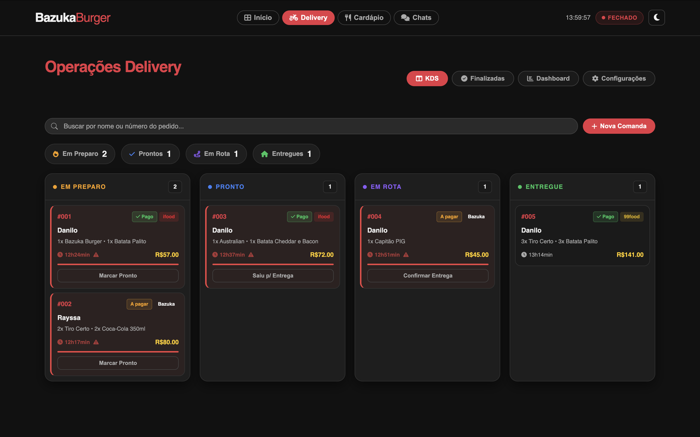
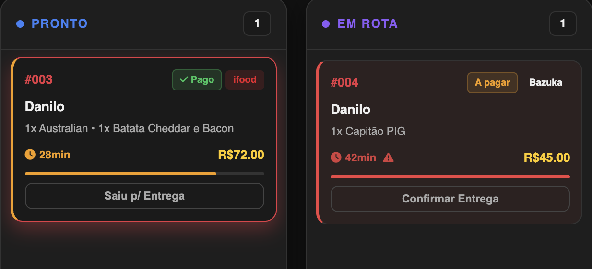
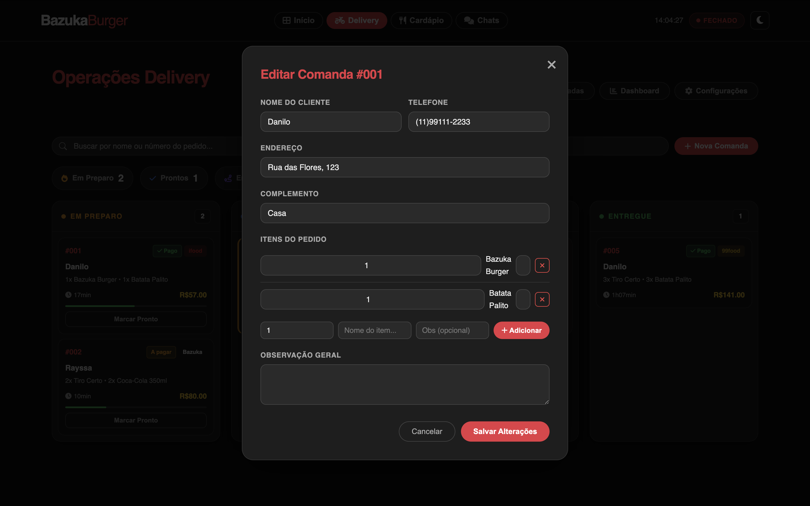

Planejamento do Backend e Arquitetura de um Sistema de Gestão para Restaurante
Essa é uma explicação sobre o grande sistema de restaurante chamado Bazuka Burger. Aqui vamos explorar as partes interna e externa do desenvolvimento, envolvendo integrações de sistemas como: 99 food, FoodDelivery e iFood.
Vou explicar as ferramentas que eu utilizei para realizar todo o processo.
Processo inicial de desenvolvimento do sistema
Criação da Interface Principal (Frontend)
O desenvolvimento começou pela camada visível do sistema: a interface que o cliente vê ao acessar o site do Bazuka Burger.
Foi utilizada uma stack simples e eficiente composta por HTML5 semântico, CSS3 com variáveis e JavaScript puro, priorizando performance e experiência do usuário.
Principais componentes desenvolvidos:
- Header fixo com navegação e alternância de tema claro/escuro
- Hero Section com animação SVG + modelo 3D (Spline)
- Seção de Destaques com grid responsivo
- Modal de personalização de pedidos
- Mapa interativo de área de entrega (Leaflet)
- Botões flutuantes de integração (WhatsApp, iFood e 99Food)

Estrutura Inicial do Código
A estrutura foi organizada utilizando HTML semântico para facilitar a leitura e manutenção futura.
A aplicação foi dividida em três partes principais: Header, Conteúdo Principal e Rodapé.
<header id="site-header">
<a href="#" class="site-logo">Bazuka<span>BURGER</span></a>
<ul class="nav-menu">
<li><a href="#home">Início</a></li>
<li><a href="#destaques">Destaques</a></li>
<li><a href="cardapio.html">Cardápio</a></li>
...
</ul>
</header>Hero Section – Animação de Montagem do Hambúrguer
Uma das partes mais marcantes é a Hero Section, que alterna entre modelo 3D e animação SVG em camadas.
<section class="hero-section" id="home">
<spline-viewer url="https://prod.spline.design/ab6vu9xs2T8vq0KJ/scene.splinecode"></spline-viewer>
<div class="hero-skeleton-background">
<div class="burger-assembly-scene">
<!-- Camadas SVG: pão, alface, queijo, hambúrguer, tomate, cebola... -->
</div>
</div>
</section>
Integração de Modelo 3D com Spline
<spline-viewer url="https://prod.spline.design/ab6vu9xs2T8vq0KJ/scene.splinecode"></spline-viewer>Cardápio Digital e Modal de Personalização
Cada produto é exibido em cards responsivos, e ao clicar em "Adicionar ao pedido" abre um modal para customização.

Mapa de Entrega e Integrações Externas
Foi implementado mapa interativo com Leaflet e botões flutuantes para WhatsApp, iFood e 99Food.

Proposta da Central de Operações — BazukaOPS
O problema que o sistema resolve
Restaurantes que trabalham com delivery enfrentam hoje um problema muito comum: a fragmentação das operações. Os pedidos chegam pelo WhatsApp, pelo iFood, pelo 99Food e às vezes por ligação. Cada um desses canais exige que o atendente fique com um celular ou computador diferente aberto, respondendo em plataformas distintas, anotando pedidos em papéis ou planilhas separadas e tentando coordenar a cozinha ao mesmo tempo.
Essa fragmentação causa atrasos, erros de pedido, perda de informação e sobrecarga da equipe. O objetivo do BazukaOPS é eliminar exatamente esse problema, reunindo tudo em uma única tela de operações centralizada.

O que é o BazukaOPS
O BazukaOPS é o painel interno do restaurante, acessado apenas pela equipe. Ele funciona como uma central de comando onde o operador consegue visualizar e gerenciar todos os pedidos em andamento, controlar o cardápio em tempo real, se comunicar com clientes de diferentes plataformas e acompanhar os números do dia, sem sair de uma única tela.
A interface foi construída no mesmo estilo visual do site público do Bazuka Burger, com suporte a tema escuro e tema claro, garantindo que a identidade do projeto seja consistente em todas as telas do sistema.
KDS — A cozinha enxerga tudo em tempo real
O módulo central do BazukaOPS é o KDS, o Kitchen Display System. Ele organiza todos os pedidos ativos em quatro colunas que representam o ciclo completo de um pedido: Em Preparo, Pronto, Em Rota e Entregue.
Cada pedido aparece como um card com o nome do cliente, os itens solicitados, o canal de origem, o valor total e o tempo decorrido desde que chegou. O operador avança o pedido de uma coluna para a próxima com um único clique, mantendo toda a equipe alinhada sobre o que está acontecendo.
Para facilitar o trabalho em dias de alto volume, há uma barra de busca no topo que filtra as comandas em todas as colunas simultaneamente, tanto pelo nome do cliente quanto pelo número do pedido.
Alerta visual por tempo de preparo
Um dos recursos pensados para reduzir atrasos é o sistema de alerta progressivo por tempo. Cada comanda possui uma barra de progresso na parte inferior que começa verde e vai mudando de cor conforme o pedido envelhece.
Até 20 minutos o card permanece neutro. Entre 20 e 35 minutos a barra e o contador ficam amarelos, indicando atenção. Acima de 35 minutos o card inteiro muda: borda vermelha, fundo avermelhado e o contador começa a piscar, chamando a atenção do operador de forma imediata.
Esse sistema existe para que nenhum pedido seja esquecido. Em vez de depender de memória ou anotação manual, a própria tela avisa visualmente quando um pedido está demorando mais do que deveria.

Detalhe e edição da comanda
Ao clicar em qualquer card do KDS, o sistema abre um painel com todas as informações completas daquele pedido: nome e telefone do cliente, endereço de entrega com complemento, status atual, tempo decorrido, lista de itens com quantidades e observações individuais, e forma de pagamento.
Caso o cliente ligue pedindo uma alteração depois que o pedido já foi criado, o operador pode editar a comanda diretamente pelo sistema: corrigir o endereço, mudar a quantidade de um item, adicionar uma observação ou incluir um produto novo. Tudo sem precisar cancelar e recriar o pedido.


Finalização de pedido e formas de pagamento
Quando um pedido é concluído, o operador abre o modal de finalização. O sistema já sabe se aquela comanda foi paga no momento da criação ou se o pagamento ainda está pendente, e ajusta a tela de acordo.
Para pedidos não pagos, o operador seleciona a forma de pagamento dentre as opções disponíveis: PIX, Cartão de Crédito, Cartão de Débito, Dinheiro, Vale Refeição, Voucher, Fiado e 99Pay. Ao selecionar dinheiro, aparece um campo para registrar o valor para troco.
Existe ainda a possibilidade de dividir o pagamento entre duas formas diferentes. Por exemplo, parte em PIX e o restante em dinheiro. O sistema calcula automaticamente o valor da segunda forma com base no que foi informado na primeira, evitando erros de cálculo manual.

Histórico de pedidos finalizados e reabertura
Todos os pedidos concluídos ficam registrados na aba Finalizadas, com informações de cliente, endereço, itens, total e a forma de pagamento utilizada. Essa aba funciona como um histórico do turno, permitindo que o operador consulte qualquer pedido do dia com facilidade.
Se por algum motivo for necessário reabrir um pedido que já foi finalizado — uma entrega que voltou, um erro no registro, um pagamento que não foi confirmado — o operador pode fazer isso com um único clique. O pedido retorna automaticamente para a coluna "Em Preparo" do KDS, pronto para ser reprocessado.
Controle do cardápio em tempo real
Um problema muito frequente em restaurantes é o cliente fazer um pedido de um item que acabou no estoque ou que não está disponível naquele dia. Para resolver isso, o BazukaOPS oferece uma tela de gestão do cardápio onde o operador pode ativar ou desativar qualquer produto com um clique.
Quando um item é desativado, ele desaparece imediatamente do cardápio digital público que o cliente acessa. Na tela de operações o item continua visível para a equipe, porém marcado claramente como inativo, facilitando a reativação quando o produto voltar a estar disponível.
Além do controle de disponibilidade, o operador também pode adicionar novos itens ao cardápio, editar nome, descrição, preço e imagem de produtos existentes ou remover itens que não fazem mais parte do menu.
Central de Chats — WhatsApp, iFood e 99Food em uma só tela
Hoje, para gerenciar pedidos de múltiplas plataformas, um atendente precisa alternar entre diferentes aplicativos o tempo todo. Isso aumenta o risco de deixar uma mensagem sem resposta e dificulta manter um padrão de atendimento consistente.
O módulo de Chats do BazukaOPS centraliza as conversas do WhatsApp, iFood e 99Food em uma única interface. O operador vê todas as conversas na barra lateral, com indicadores de mensagens não lidas, e pode alternar entre elas sem sair da tela de operações.
Para agilizar o atendimento, há um conjunto de respostas rápidas pré-configuradas com as mensagens mais usadas no dia a dia: confirmação de pedido recebido, aviso de que o pedido saiu para entrega, confirmação de entrega, informação sobre o horário de funcionamento, entre outras.
Dashboard — acompanhamento dos números do dia
O Dashboard oferece uma visão rápida do desempenho do restaurante no turno atual. Ele exibe quatro indicadores principais: total de pedidos realizados no dia, faturamento acumulado, ticket médio por pedido e tempo médio de preparo.
Abaixo dos indicadores, há um gráfico de distribuição que mostra de onde os pedidos estão chegando — WhatsApp, iFood ou 99Food — e uma lista dos itens mais vendidos no dia.
Configurações de funcionamento e delivery
A tela de Configurações centraliza todos os parâmetros operacionais do restaurante. O operador pode definir os horários de abertura e fechamento para cada dia da semana de forma independente, ativando ou desativando cada período conforme necessário.
Na parte de configurações de delivery, é possível ajustar o raio máximo de entrega em quilômetros, a taxa de entrega cobrada, o valor mínimo de pedido e o tempo estimado informado ao cliente.
Visão geral do fluxo completo de um pedido no sistema
Para entender como todas as partes se conectam, vale visualizar o caminho completo que um pedido percorre dentro do BazukaOPS, desde o momento em que o cliente faz o pedido até a entrega confirmada e o pagamento registrado.
Cada etapa desse fluxo é gerenciada por um módulo diferente do sistema, mas o operador não precisa navegar entre telas para acompanhar o pedido: o KDS mantém tudo visível em um único lugar.
Durante o desenvolvimento do sistema para restaurante, consegui avançar bastante na parte visual e nas interfaces do sistema. Já desenvolvi componentes importantes como o KDS (Kitchen Display System), o cardápio digital e a tela principal voltada para o cliente, responsável por apresentar os produtos e atrair o consumidor para realizar pedidos.
Apesar desse progresso na interface do sistema, comecei a perceber que ainda faltava desenvolver uma parte fundamental da aplicação: o backend, responsável por toda a lógica de funcionamento do sistema.
O que já foi desenvolvido
Até o momento, as seguintes partes do sistema já foram construídas:
- Interface do KDS, utilizada pela equipe da cozinha para visualizar e montar os pedidos.
- Cardápio digital, onde os clientes podem visualizar os produtos disponíveis.
- Página principal, responsável por apresentar o restaurante e incentivar a realização de pedidos.
Essas partes representam o frontend da aplicação, ou seja, aquilo que o usuário visualiza e com o qual interage diretamente.
No entanto, ainda é necessário desenvolver toda a infraestrutura que ficará por trás dessas interfaces, garantindo que as informações sejam processadas corretamente.
Componentes que ainda precisam ser desenvolvidos
Durante o planejamento do sistema, identifiquei vários módulos que ainda precisam ser criados no backend:
- Sistema de gerenciamento de pedidos
- Despacho de pedidos para entrega
- Controle financeiro
- Gestão de estoque
- Integração com plataformas externas
- Sistema de rotas para entregadores
- Painel administrativo para o proprietário
Integração com plataformas de delivery
Outro ponto importante é a integração com plataformas de delivery. A ideia é conectar o sistema com serviços como o iFood e o 99Food.
Atualmente, muitos restaurantes precisam utilizar vários aplicativos diferentes ao mesmo tempo para acompanhar pedidos e responder clientes. Isso gera confusão e reduz a eficiência do atendimento.
A proposta do sistema é criar uma espécie de central unificada de pedidos, onde todas as solicitações, independentemente da plataforma de origem, sejam exibidas dentro do próprio sistema.
O fluxo funcionaria da seguinte forma:
- O cliente realiza um pedido em uma plataforma de delivery.
- A plataforma envia os dados do pedido através de uma API.
- O sistema recebe essas informações e armazena no banco de dados.
- O pedido aparece automaticamente no KDS da cozinha.
Dessa forma, os funcionários precisam utilizar apenas uma única interface para gerenciar todos os pedidos.
Sistema de despacho e rotas de entrega
Outro recurso planejado é um sistema para auxiliar no despacho dos pedidos e no cálculo de rotas de entrega.
Para isso, é possível utilizar serviços de mapas como o Google Maps Platform ou soluções baseadas no OpenStreetMap.
Com essa integração, o sistema poderá:
- calcular rotas de entrega automaticamente
- estimar o tempo de chegada do entregador
- organizar melhor o fluxo de entregas
Dessa forma, os funcionários precisam utilizar apenas uma única interface para gerenciar todos os pedidos.
Painel administrativo para o proprietário
Outro ponto importante do sistema será a criação de um painel administrativo exclusivo para o proprietário do restaurante.
A ideia é permitir que o dono tenha controle total sobre o funcionamento do sistema, podendo realizar alterações sem depender de suporte técnico externo.
Nesse painel será possível, por exemplo:
- alterar o nome do restaurante
- modificar produtos e preços
- criar ou editar setores do KDS
- gerenciar usuários e permissões
- visualizar relatórios financeiros
Dessa forma, os funcionários precisam utilizar apenas uma única interface para gerenciar todos os pedidos.
Cardapio
Outro ponto importante do sistema será a criação de um painel administrativo exclusivo para o proprietário do restaurante.
PA ideia é permitir que o dono tenha controle total sobre o funcionamento do sistema, podendo realizar alterações sem depender de suporte técnico externo.
Nesse painel será possível, por exemplo:
- alterar o nome do restaurante
- modificar produtos e preços
- criar ou editar setores do KDS
- gerenciar usuários e permissões
- visualizar relatórios financeiros
Dessa forma, os funcionários precisam utilizar apenas uma única interface para gerenciar todos os pedidos.